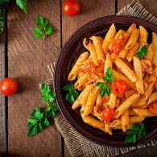

Search, Savour, Enjoy!
local_dining
Your Quest for Deliciousness Ends Here
Lunch
Dinner
Snack
Teatime
Latest Indian Recipes
-
 Recipe name
schedule 2 minutes -
Recipe name
schedule 2 minutes -
Recipe name
schedule 2 minutes -
Recipe name
schedule 2 minutes - Show more navigate_next
Choose your health preference.
Making a choice about your health preferences is a significant move towards attaining a healthier lifestyle.
Wheat-free
Vegetarain
Vegan
Tree-Nut-Free
Sulfite-Free
Sugar-Consious
Soy-Free
Shellfish-Free
Red-Meat-Free
Pork-Free
Pectarian
Peanut-Free
Paleao
No-Oil-Added
Mustard-Free
Mollusk-Free
Mediterranean
Lupine-Free
Low-sugar
Low-Potassium
Kosher
Kidney-Friendly
Paleao
Keto-Friendly
Immuno-Supportive
Gluten-Free
FODMAP-Free
Fish-Free
Egg-Free
DASH
Dairy-Free
Crustcean-Free
Celery-Free
Alcohol-Free
Alcohol-Cocktail